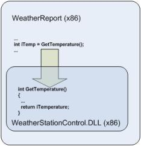
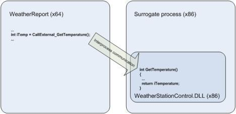
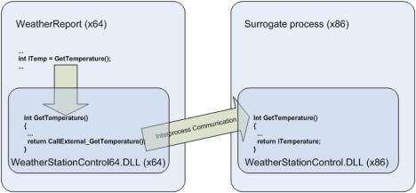
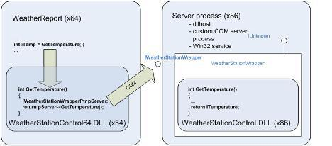

Forward: Accessing 32-bit DLLs from 64-bit code
Migrating your 32-bit Windows application to a 64-bit machine can be problematic if you have 32-bit DLLs that you cannot re-write. Mike Becker shows you how you can access 32-bit DLLs from 64-bit code using built-in IPC mechanisms.
Originally published on DNJ Online, June 2007.
Microsoft’s 64-bit technology first appeared with Windows Server 2003 for Itanium 2 (also known as IA64 Architecture) and for eXtended technology CPUs (also known as x64 Architecture). It offers many advantages but also raises new issues for the software developer. For example, you may still need to access existing 32-bit DLLs from a 64-bit process.
A key advantage of 64-bit technology is its ability to address up to 8Tb of memory, against a maximum of 2Gb for 32-bit processes. As a result, 64-bit technology allows most data processing to take place in memory, without any need for temporary disk storage. This can considerably increase performance and open up new data processing scenarios. There are therefore good arguments for migrating current 32-bit software products to a 64-bit platform.
Many C or C++ applications are easy to migrated to a 64-bit platform, particularly if they are written in a monolithic fashion. Sometimes they just need to be rebuilt with an x64/IA64 compiler to run as native 64-bit applications. However distributed or module-based software can cause more problems.
The conflict: 64-bit versus 32-bit
A major migration issue concerns 32-bit software components which cannot be migrated, perhaps because the source code is lost or one of the dependencies cannot be migrated.
Your 32-bit software is still supported on a 64-bit platform as 32-bit processes can be executed inside the dedicated Windows on Windows’ (WOW64) subsystem which is part of all 64-bit Windows operating systems. However a 64-bit process cannot load a 32-bit module into its process space, and a 32-bit processes cannot load a 64-bit module into its process space. The only way that communication can happen between 32-bit and 64-bit modules is through interprocess communication (IPC). In other words, 32-bit and 64-bit processes can exchange data using IPC techniques such as out-of-process COM, sockets, Windows messages or memory mapped files.

A 32-bit software product contains the main module WeatherReport which calls into the DLL WeatherStationControl. As long as both the main module and the DLL are 32-bit processes the product can run on both 32-bit and 64-bit platforms (inside WOW64). If both the main module and the DLL are migrated to the 64-bit platform, then they can both run in a native 64-bit process. However if only the main module is migrated to 64-bit, it will not be able to load the 32-bit DLL.
The best way to migrate such a product to a 64-bit platform is to migrate both the main module and the dependency DLL, but if the dependency DLL cannot be migrated then it cannot be loaded into the 64-bit process and the application won’t work.
The solution: a surrogate process
This issue can be solved by loading the dependency DLL into a separate 32-bit process space. The main module, running as a 64-bit process, can then access the dependency DLL across the process boundary using IPC (see MSDN reference).

A 64-bit process can access a 32-bit DLL across a process boundary if the 32-bit DLL is loaded into a separate 32-bit surrogate process space, and the application makes use of the built-in IPC mechanisms that support data exchange between 32-bit and 64-bit processes.
This solution requires additional work as the 32-bit surrogate process that loads the 32-bit DLL and exposes its API must be created. Also, some changes will be necessary on the 64-bit side as the consumer must use one of the IPC techniques instead of directly accessing the 32-bit DLL. It is worth noting that, in extreme cases, this additional work could be comparable to the work involved in developing a 64-bit version of the 32-bit DLL from scratch.
One possible way of reducing these costs is to implement a 64-bit wrapper’ DLL that exposes the same functions, parameters, types and so forth as the original 32-bit DLL. This wrapper DLL can then make IPC-based calls to the original 32-bit DLL, which has been loaded into a surrogate process.

A 64-bit wrapper DLL (WeatherStationControl64.DLL) exports the same interface as the original 32-bit DLL (WeatherStationControl.DLL), so providing the same services to the main process (WeatherReport) without you needing to make any changes to the code of either the main process or the 32-bit DLL. This wrapper DLL delegates calls to the 32-bit DLL, which is running in a surrogate process, using IPC.
The main costs of this solution arise from implementing the surrogate process, loading the 32-bit DLL and implementing the 64-bit wrapper DLL. The actual cost depends on the IPC technique used to exchange data between the 64-bit and 32-bit processes.
COM as an IPC mechanism
One of most popular IPC techniques is DCOM (Distributed COM). Originally designed for distributed systems, DCOM is still supported on 64-bit Windows platforms, so both 32-bit and 64-bit COM modules can be built. The only limitation is that 64-bit and 32-bit modules cannot reside in the same process space, so they have to interoperate across process boundaries. This is done using out-of-process’ (OOP) COM components, in the following way:
- Create a 32-bit component implementing a COM object which loads and calls into the 32-bit DLL, and exposes the 32-bit DLL interface as a COM interface.
- Configure this COM components for OOP by either creating a standard COM+ OOP application (using dllhost as the surrogate process), or by implementing the COM component as a dedicated COM server process using, for example, an ATL COM server as hosting process or a Win32 service as a dedicated COM server.
- Create a 64-bit wrapper DLL which implements the same interface as the original 32-bit DLL, imports the COM interface of the COM object created above, translates current calls to the exposed interface into calls to the COM object interface, transfers the call parameters, receives return values and delegates them to the callers.

The 32-bit DLL (WeatherStationControl.DLL) is used by a COM object (WeatherStationWrapper) which exposes the interface of the 32-bit DLL as a COM interface. The 64-bit wrapper DLL (WeatherStationControl64.DLL) makes calls to this interface which are delegated to the original 32-bit DLL. The main process (WeatherReport) calls the interface exposed by the 64-bit wrapper DLL but is in fact served by the original 32-bit DLL.
This solution should be significantly less expensive than creating a 64-bit version of the 32-bit DLL from scratch. Microsoft’s ATL technology is supported by Visual Studio with wizards and ready-written code fragments which should also help lower migration costs by saving time and reducing the likelihood of errors.
Implications
There are, however, a number of things that you still need to keep in mind:
1. Alignment
The alignment of data in memory is different for 32-bit and 64-bit processes. This means that your more complicated custom data structures may be serialized by a 32-bit process in a way that is different to that expected by a 64-bit process, and vice versa. Microsoft Windows Platform
SDK includes documentation about the differences in memory data alignment between 32-bit and 64-bit processes.
2. Data types
In most instances, 64-bit Windows uses the same data types as the 32-bit version. The differences are mainly in pointers which are 32 bits long in 32-bit Windows and 64 bits long in 64-bit Windows. The pointer-derived data types such as HANDLE and HWND are also different between 32-bit and 64-bit versions. Windows helps you to keep a single code base for both 32-bit and 64-bit software versions by offering polymorphic data types that have a different length depending on the target platform, for example INT_PTR declares an integer with the size of a pointer’. Any variable of this type is an integer which is 32 bits long on a 32-bit platform and 64 bits long on a 64-bit platform.
3. COM initialize
You can only access a COM object from a Windows application the object has been successfully initialized. The COM API function CoInitialize()must be called for each thread that is going to access a COM object before any COM interface calls are made, and the complementary call CoUninitialize() must be performed before the thread exits (see MSDN reference). This rule must be strictly respected if the main process calls to the original 32-bit DLL are multi-threaded.
4. Security
The OOP COM component instantiates COM objects in a separate process, whether a surrogate process, a COM server or Win32 service. This can mean that calls to the 32-bit DLL may happen in a different security context to the main process, especially if the main process makes intensive use of impersonation. If this is the case you may want to configure dedicated credentials for the OOP component, or implement internal impersonation in the COM object.
5. Performance
The IPC-based solution is almost certain to be slower than making direct calls into the DLL. Data marshaling over process boundaries, automatic data conversion between 32 and 64 bits, WOW64 features and delays while instantiating the COM object will all impact performance. However there are numerous optimizing techniques that you can use such as COM pooling, caching inside the wrapper DLL, chunky’ versus chatty’ calls over process boundaries, implementing performance critical interfaces directly in the 64-bit DLL, and so forth.
6. Redirection
The WOW64 subsystem is in charge of supporting 32-bit modules on 64-bit Windows. To avoid unwanted collisions between 32-bit and 64-bit software, particularly when accessing the file system and registry, WOW64 isolates 32-bit modules using a process called redirection’ (see MSDN reference). For example, for a 64-bit process the call to obtain the system folder pathname returns %WINDOWS%\System32, but for a 32-bit process it returns %WINDOWS%\SysWOW64. The program folder path for a 64-bit process is Program Files’, but for 32-bit process it is Program Files (x86)’. The registry key HKEY_LOCAL_MACHINE\Software contains 64-bit process settings and data, while the key HKEY_LOCAL_MACHINE\Software\WOW6432Node contains 32-bit process settings and data.
This redirection is activated automatically when software modules call to popular pre-defined system paths or registry keys.
7. Kernel modules
The solution proposed here is for 32-bit user level DLLs, and doesn’t work with 32-bit drivers. This is because 32-bit kernel modules cannot be used on a 64-bit platform, with no exceptions or workarounds. If your product includes any kernel level module, such as a device driver, then the only possible migration route is to re-write the kernel module as a 64-bit process.
8. Setup
Using a COM OOP component in place of direct calls to a DLL requires changes to your setup procedure as the COM components must be installed and registered by the system. As discussed under ‘Security’ above, this may involve configuring dedicated credentials for the COM
component.
References